Magna
Sed nisl arcu euismod sit amet nisi lorem etiam dolor veroeros et feugiat.
A rewarded Unity 2D Puzzle Platformer - Wonderjam UQAC Fall 2022
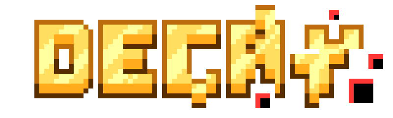
Project Type:
Game
Platform:
PC/WebGL
Team Size:
6
Role:
2D Artist - Tech Art
Engine/Software:
Unity, Krita
Project URL:
Decay is a small puzzle plaformer game made under 48h during the Wonderjam event at UQAC in fall 2022. Made following the theme "It's not a glitch, it's a feature", the team we assembled had 1 designer, 3 programmer, and 2 artists. I was a part of the last team, focusing on my artistic skills to produce assets for the game, in the earlier phase and then moving on to assisting in programming and technical integration later on.
The Wonderjam event this game was made for had a few specificities compared to others. First of all, it was an in-person event, which allowed for easier communication within the team. Secondly, each registered team was given 3 additional "styles" to try and integrate for extra points. Our team received Co-op, Turn-based, and Progression. Finally, the rating of each submitted game was made in two parts, popular vote and jury. For this instance of the wonderjam, the jury was composed of people from the Ubisoft studio in Chicoutimi.
Our team settled on a platformer game, where the player had to help the game's character escape a game slowly becoming corrupt by changing around properties of object around them. By switching between "playing" and "editing", the player can affect the level layout to allow progression from level to level.
In Decay, the character and the player are split, with the character communicating through the console as they gain awareness, and the player controlling the game, editing the levels, and guiding the character to the next level. The further and further they go, the more the levels, sprites, and background seem to get corrupted. Texture go missing, objects appear randomly, sprites glitch out... almost as if the game files themselves were decaying with each level.
While the game initially presents itself as a simple platformer, where the player must navigate to collect a key to open the door to the end of the level. However, the core mechanic of the game reveals itself once the player reaches a level seemingly impossible to pass. With hints coming through the "console" on the side of the screen, the player learns they can interact with elements of the decor and "break" the game to forge a path ahead.
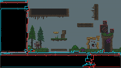
HUD UI Elements of the game present in edit mode
The above image shows a development-stage concept of the game visuals. Most elements have their definitive visuals present today in the available game, lacking only dynamic effects and texts.
The UI panels (black background with blue and red accents), is designed to mimick the UI of game engines, hinting at the idea that the player is editing the "game files" as opposed to simply using game mechanics. It's split as follows :
- On the left, the "console", present at all time in levels. It contains flavor text dynamically filling out overtime, different for each
level, that plays out the story of the game, dialogue, and gives hints as to how to progress.
- On the bottom, the "folders" panel appears only in edit mode, and shows a list of all editable objects in the level, as a quick
access version (as opposed to clicking directly on the object in the level). Once an object is selected, its editable properties show
up on the right side of the panel for toggleable options.
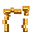
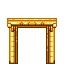
Door elements
In each level, the player must collect the key (shaped like a USB stick) to unlock the door, then reach it to finish the level. At any point, the player can toggle on and off the "edit" mode, pausing the game to change the properties of objects and access new places. If the player falls off the level or gets stuck, the level resets and all objects return to their initial state, apart from their "broken" visual.
In Decay, there are 4 types of objects the player can alter using the "edit" mode :
- Movable Platforms : when in edit mode, the player can move those platforms within a set bounding box by dragging the arrows;
- Toggle Colliders : these elements' colliders can be toggled on and off, letting the player pass through freely or becoming solid to form a bridge or a wall;
- Rotation platforms : fixed around an axis, these can be rotated around it to go up, down, extend a bridge, or free a passage;
- Gravity switched : reserved to some boxes in the current version of the game, toggling this option reverses the gravity of the object;
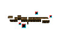
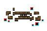
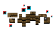
Editable objects and their "glitched" version once edited
As in charge of Technical Art in this project, I decided to implement a parallax background to our game. With duller colors for the level design and the parallax effect, I hoped to help the player differentiate between background and walkable surfaces, as well as make the game feel less "flat". Furthermore, because of the slow degradation of the visuals as the player progresses through the levels, I wanted to give us another medium to implement those subtle changes and "corrupted" elements.
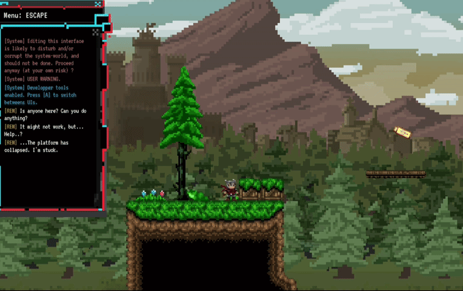
Parallax Background Effect demo
Having never worked on a system like that before, I had to create it entirely from scratch. With a first drawing of the full background in a drawing software, the different sections of the drawing were split into "layers". Each layer represents a certain level of depth in the drawing, that may move independently from the other. In the below images, the background of each layer has been colored black to better showcase how each one may overlap the others

Composition of the background
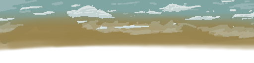
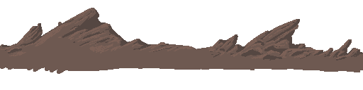
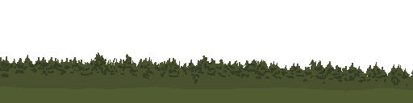
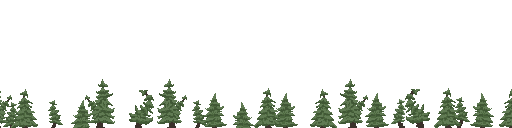
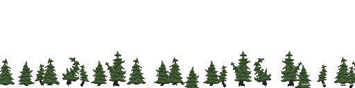
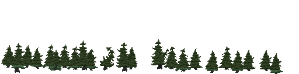
Parallax background layers split
In order to make this effect work, both horizontally and vertically, each layer is assigned a value indicating what depth its at. By making sure each layer moves in the opposite direction to the camera movement, proportionately to how close it is to the plane of focus (the further away it is, the less it will move), we are able to simulate an effect of perspective while retaining the visual aspect of 2D plane cameras.
As mentionned earlier, the further into the levels the player goes, the more glitches and distortions they will come across. This was made to support the narrative line of the game where the character seeks to escape the collapsing game. To bring this effect to life and sell the degradation of the game, a few methods were used.
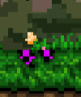
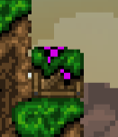
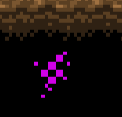
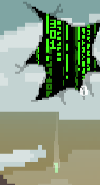
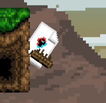
Examples of static glitch textures
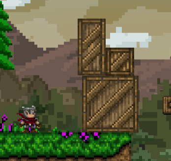
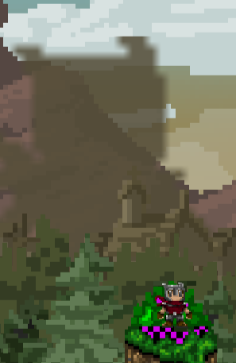
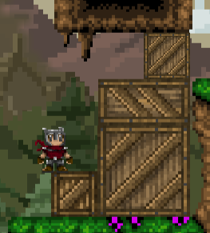
Examples of disappreaing sprites
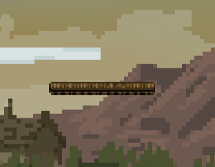
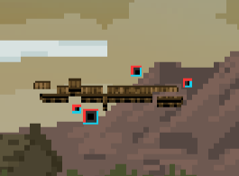
Moving platform before and after being used
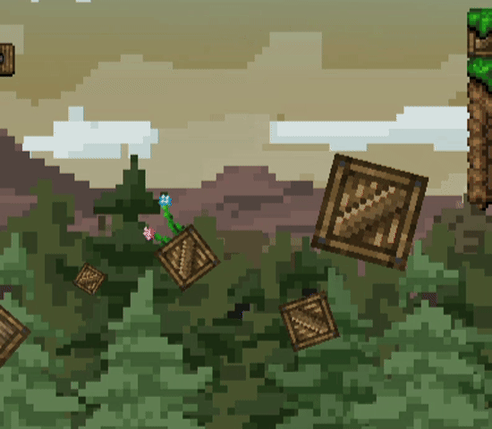
Example of dynamic glitching objects